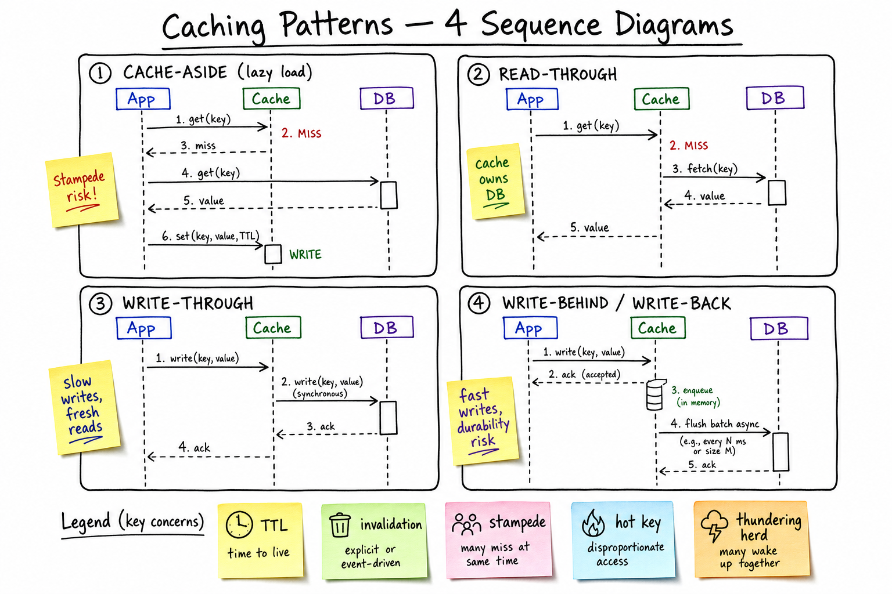

Caching Patterns // Concept Primer
Read-heavy systems can't hammer the source of truth on every request. Caching trades a small amount of staleness for a 10-1000x latency drop and a similar reduction in DB load. The hard part isn't reading from cache — it's invalidating, surviving stampedes, and not making correctness worse.

Four canonical patterns side by side: cache-aside (app reads cache, falls back to DB, writes back), read-through (cache fetches from DB transparently), write-through (sync write to both), write-behind (ack from cache, batch flush to DB). Sticky notes call out the failure modes of each.
01 — What Problem It Solves
Two pressures push you toward caching:
- Latency budget — a Postgres query is 1-10ms; an in-memory Redis GET is 0.2ms; a process-local map is 0.001ms. For p99 < 100ms with 50 internal hops, you can't afford the DB.
- Throughput — one Redis node handles 100K+ GETs/sec; one Postgres replica handles 10K reads/sec. 10x cheaper hardware.
And one fundamental compromise:
Phil Karlton: "There are only two hard things in computer science: cache invalidation and naming things." Caches are easy to put in; the work is keeping them correct.
Distinct from Redis B sheet — that's the specific tech; this is the design patterns you implement using it.
01a — Core Vocabulary
| Term | Definition | Notes |
|---|---|---|
| Cache hit / miss | Key was / wasn't in cache. | Hit ratio = hits / (hits + misses). 90%+ is the target. |
| TTL | Time-to-live; cache entry auto-evicts after. | Tradeoff: long TTL = stale risk, short TTL = miss rate. Often 30s-1h. |
| Eviction policy | What to drop when full: LRU, LFU, FIFO, ARC, random. | LRU is default. LFU survives one-off scans better. |
| Hot key | A single key accessed disproportionately. | Concentrates load on one cache node. |
| Cache stampede / dogpile | Hot key expires → many concurrent requests miss → all hit DB. | Mitigation: single-flight, lock, probabilistic early refresh. |
| Thundering herd | Many clients wake at once and target the same backend. | Cache restart, mass TTL expiry, deploy. Jitter is the fix. |
| Cache penetration | Queries for keys that never exist (e.g. attacker probing). | Cache the negative result, or use a Bloom filter. |
| Cache breakdown | One very hot key expires; DB suddenly takes its full traffic. | Special case of stampede. |
| Cache avalanche | Many keys expire simultaneously (server restart, synced TTLs). | Jittered TTLs, warmup on boot. |
| Refresh-ahead | Refresh hot entries before they expire. | Background job; hides DB latency entirely. |
02 — Patterns
1. Cache-Aside (lazy loading)
read(key): v = cache.get(key) if v == HIT: return v v = db.get(key) cache.set(key, v, TTL) return v write(key, v): db.put(key, v) cache.delete(key) # invalidate
Pros: simple, cache failure doesn't break writes, only hot keys are cached. Cons: first read is slow (cold miss), stampede on hot-key expiry, cache and DB can drift if you forget to invalidate on writes.
2. Read-Through
read(key): return cache.get(key) # cache fetches from DB on miss write(key, v): db.put(key, v); cache.delete(key)
Pros: app code is clean; cache encapsulates loader. Cons: tightly couples cache to schema; cache outage degrades read path (cache is on the hot path).
3. Write-Through
write(key, v): cache.set(key, v) db.put(key, v) # synchronous return ok
Pros: cache always fresh after a write; no invalidation race. Cons: slow writes (cache + DB latency); caches cold data that may never be re-read.
4. Write-Behind (Write-Back)
write(key, v): cache.set(key, v) # only cache, return immediately enqueue(db.put, key, v) # async batched flush
Pros: very fast writes; coalesces multiple writes to same key. Cons: data loss if cache crashes before flush; ordering/consistency tricky.
5. Refresh-Ahead
Background job refreshes the top-K hottest keys just before TTL expiry. Hides DB latency from users entirely. Used by content APIs (e.g. news article cache).
Decision matrix
| Pattern | Read latency | Write latency | Staleness risk | Best for |
|---|---|---|---|---|
| Cache-Aside | Low (after warm) | Low | Medium | Read-heavy, tolerate staleness |
| Read-Through | Low | Low | Medium | Same as cache-aside, cleaner abstraction |
| Write-Through | Low | High | Low | Write-rare, read-heavy, fresh required |
| Write-Behind | Low | Very low | Low (live) / High (after crash) | Counters, telemetry, accept lossy |
| Refresh-Ahead | Lowest | n/a | Low | Predictable hot-key set |
Default answer for interviews: cache-aside with explicit invalidation on write, TTL as safety net, single-flight to mitigate stampede. Justify by failure modes.
04 — Invalidation Strategies
| Strategy | Mechanism | Tradeoff |
|---|---|---|
| TTL only | Cache expires after N seconds; no invalidation logic. | Bounded staleness. Simple but always slightly stale. |
| Explicit delete on write | App deletes cache key when it writes to DB. | Race: another reader can repopulate cache between DB write and delete. |
| Delete-then-write (vs write-then-delete) | Order matters: delete first, write DB, delete again ("double delete"). | Mitigates the race above. Still not bulletproof. |
| Versioned keys | Embed version: user:42:v17. Writers bump version; old keys age out. | No race; cache fills up. Good for catalog/CMS data. |
| CDC-driven | Subscribe to DB binlog/WAL/oplog; invalidate cache as changes flow by. | Strongest; complex pipeline (Debezium, Maxwell). |
| Write-through | Update cache inline with DB write. | Strongest but slow. |
The classic race
T1 (writer): DB.put(K, v_new) T2 (reader): cache.get(K) -> MISS T2 (reader): v = DB.get(K) -> v_new (good) T1 (writer): cache.delete(K) ... but cache was empty T2 (reader): cache.set(K, v_new) ... good VS. T2 (reader): cache.get(K) -> MISS T2 (reader): v = DB.get(K) -> v_old T1 (writer): DB.put(K, v_new) T1 (writer): cache.delete(K) T2 (reader): cache.set(K, v_old) ... STALE WRITE wins!
Mitigation: short TTL as safety net so staleness has a bound; or version-based reads (write checks version, ignores stale set).
05 — Cache Stampede / Dogpile Mitigation
Hot key X has 10K QPS. Its TTL fires. Suddenly 10K concurrent misses all hit the DB for the same value. DB falls over.
Mitigations
| Technique | How | Notes |
|---|---|---|
| Single-flight / mutex | First missing request takes a distributed lock; others wait and re-read cache. | Go's singleflight, Python's aiocache, Memcached's add-then-get pattern. |
| Probabilistic early expiration | Refresh with probability that grows as TTL approaches expiry (XFetch algorithm). | Some traffic re-populates before everyone misses. |
| Stale-while-revalidate | Serve stale value past TTL while one request refreshes in background. | HTTP stale-while-revalidate, CDN pattern. |
| Jittered TTL | TTL = base + random(0..jitter). Spreads expiries over time. | Critical when warming a cluster of identical keys. |
| Refresh-ahead | Background job refreshes top-K keys. | Best for known hot keys. |
Thundering herd (related)
Cache cluster restarts → every request misses → DB melts. Fixes: warmup phase on boot (load top-K hot keys), staggered restart, request coalescing at the LB.
06 — Penetration, Breakdown, Avalanche
Three related but distinct failure modes:
| Failure | What | Fix |
|---|---|---|
| Penetration | Queries for keys that don't exist anywhere (attacker probing user_ids, or app bug). Every query bypasses cache, hits DB. | (a) Cache the negative result with short TTL (K -> NULL_SENTINEL for 60s). (b) Bloom filter in front to reject definitely-missing keys. |
| Breakdown | One very hot key expires; DB suddenly takes the load that was going to cache. | Mutex/single-flight; never expire hot keys (refresh-ahead); or "permanent + manual invalidation". |
| Avalanche | Many keys expire simultaneously (server restart, all TTLs set at same instant). | Jittered TTLs, gradual warmup, request shedding on DB at threshold. |
07 — Multi-Tier Caching
Production reads at scale pass through 4-5 caches, each closer and faster than the next:
Browser → HTTP cache, service worker (per-user, ~1ms) CDN → Cloudflare, Akamai, CloudFront (geo, ~10ms) LB / Edge → Varnish, NGINX (~1ms) App tier → in-process LRU (~0.001ms) Distributed → Redis, Memcached (~0.5ms) DB cache → Postgres shared_buffers (~0.1ms) Disk → SSD (~0.1-1ms)
Each layer absorbs ~90% of misses from the layer above. A 1M QPS request hitting the DB after 5 layers of 90% absorption is 1M × 0.1^5 = 10 QPS.
In-process vs distributed
| Aspect | In-process (LRU) | Distributed (Redis) |
|---|---|---|
| Latency | ~1µs | ~500µs |
| Capacity | ~GB per node | ~TB shared |
| Consistency | Each node has own copy → drift | Single shared view |
| Invalidation | Hard (pub/sub or short TTL) | Easy (DELETE) |
Use in-process for ultra-hot, ultra-static data (feature flags, currency rates). Distributed for everything else.
08 — What to Cache vs Not
Cache
- Read-heavy, write-rare (user profiles, product catalogs, configs).
- Expensive to compute (recommendations, search results, aggregations).
- Stable IDs (lookup tables, geocode → city).
- Session state in stateless services.
Don't cache
- Real-time / strongly consistent data (account balance during a transfer, inventory at checkout).
- Personalised but rarely-read (cache miss rate > 50%).
- Huge keys (caches optimise for small values, <100KB).
- Data with PII regulations that complicate eviction (right-to-be-forgotten).
Rule of thumb: if reads are > 10x writes AND staleness of N seconds is acceptable AND working set fits in memory, cache.
09 — Hot Key Isolation
Even with sharded cache (consistent hashing), one celebrity key can saturate a single Redis node (network + CPU).
Techniques
- Local read-through with short TTL — copy hot keys into in-process LRU for 1-5s. Each app server handles its own load.
- Replicate hot key —
user:bieber#0..#15across many nodes; client picks random. - Dedicated cache cluster — pin the top-100 keys to a separate fat Redis.
- Client-side caching with notifications — Redis 6 CLIENT TRACKING pushes invalidations.
Detection: Count-Min Sketch + heavy-hitters sampling. Alert when one key > 1% of total cache QPS. Twitter's "celebrity user" handling is a canonical example.
10 — Where It Shows Up
- Twitter / Timeline — pre-computed timelines cached per user.
- Uber Surge — price multipliers cached per cell with short TTL.
- Search Autocomplete — query-prefix → suggestions cached.
- Rate Limiter — counters in Redis.
- URL Shortener — short_code → long_url cache hit ratio 95%+.
- Feature Flags — in-process cache, pub/sub for invalidation.
- Inventory — don't cache stock for checkout; do cache product metadata.
- Redis — the specific tech you usually implement these patterns with.
- CDN — edge cache layer.
- LRU Cache — the data structure inside in-process caches.
Related primers: Sharding (for sharding the cache itself), Consistency Models (for the staleness story).
11 — Common Interview Probes
- "How do you prevent a cache stampede?"
- "How do you invalidate a cached row that was just updated?"
- "Bieber's profile gets 100K QPS — what do you cache and where?"
- "Cache cluster restarts cold. How do you avoid taking down the DB?"
- "Where exactly does the cache fit in your architecture? Draw it."
- "Write-through vs cache-aside — which would you pick for this system?"
- "How big should the cache be? How long should TTL be?"
12 — Interview Q&A
Cache-aside vs read-through — what's the practical difference?
Same data flow, different ownership. Cache-aside: the app contains the miss-handling code — explicit get/db-fallback/set. Read-through: the cache library transparently fetches from DB on miss. Read-through is cleaner abstraction; cache-aside is easier to debug and degrade gracefully when the cache fails. Most production systems are cache-aside.
How do you prevent a cache stampede?
Single-flight: only one request per key is allowed to fetch from DB; others wait. Implement as a per-key mutex in the cache (Redis SETNX) or per-process map (Go singleflight). Combine with jittered TTLs to spread expiries and probabilistic early refresh so traffic naturally repopulates before mass expiry.
The cache and DB are out of sync — how?
Classic race: reader fetches old value from DB, then writer updates DB and invalidates cache, then reader writes the old value to cache. Mitigations: (1) short TTL as safety net — staleness is bounded; (2) versioned keys so a stale write loses; (3) CDC-driven invalidation from the DB binlog so cache sees changes in order. For correctness-critical data (account balance), don't cache.
How do you size a cache?
Measure working-set distribution: P90 of read frequency over your time window. Aim for hit ratio > 90%, which usually needs ~20% of total dataset in cache (long-tail follows Zipf). Monitor evictions per second — high evictions = undersized. Memory cost typically < 10% of DB cost for > 10x QPS reduction.
How long should TTL be?
Two anchors: (1) max staleness business can tolerate (e.g. 5min for product price, 30s for live score); (2) refresh cost × QPS. If TTL too short, cache miss rate is high; if too long, staleness is unacceptable. Common defaults: 30s-1h. Pair with explicit invalidation on writes so TTL is just the safety net.
Cache penetration — what is it and how do you fix it?
Attackers (or buggy clients) query for user_ids that don't exist. Every request misses cache, hits DB, returns nothing → DB load spike. Fixes: (1) cache the negative result with short TTL (60s) — SET key NULL_SENTINEL EX 60; (2) Bloom filter in front of cache to reject keys definitely-not-in-DB; (3) rate-limit unknown-id queries.
Where should the cache live — in-process or remote?
Both. In-process LRU for ultra-hot reads (~1µs) of small static data — feature flags, config, rate limiter buckets. Remote Redis/Memcached for shared cache (~500µs) of bigger or per-user data. Invalidating in-process is hard, so use it only for things with low write rates or where short TTL is OK.
Write-behind sounds great — why isn't it default?
Crash window. Between cache ack and async DB flush, the data exists only in cache memory. Cache crash = lost writes. Acceptable for telemetry, counters, analytics; not acceptable for orders, payments, messages. Mitigate with WAL on the cache itself (Redis AOF) or by writing to a durable buffer (Kafka) instead of pure memory.
How do you cache a one-billion-row table?
You don't — cache the hot subset. Working set follows Zipf, so the top 1-10% gets ~80% of traffic. Use cache-aside with LRU + reasonable TTL; let cold rows live on disk. If global aggregates need caching, pre-compute and cache the aggregate result, not the source rows.
How do you cache a paginated list?
Two options: cache the full list and slice in app; or cache per-page (list:user:42:page:3). Per-page is simpler but invalidation across pages on a new insert is tricky. Better pattern: store the list as a Redis sorted set or list and use range commands — updates are O(log N), reads are local.
What about cache for write-heavy workloads?
Caching reads doesn't help writes. For write-heavy, either: (1) batch writes into a write-behind buffer (Redis stream → periodic DB flush) trading durability; (2) write to a faster store (LSM-tree DB like Cassandra) and skip the cache; (3) accept that DB writes are the bottleneck and shard. Caching is a read optimisation.
SDE2 vs SDE3 differentiator?
| SDE-2 | SDE-3 |
|---|---|
| Names cache-aside vs write-through. TTL + invalidation. Hits Redis. | + stampede mitigation (single-flight, jitter, probabilistic refresh), penetration/breakdown/avalanche distinction, CDC-driven invalidation, multi-tier cache hierarchy, hot-key isolation via salting or local copies, when NOT to cache, race-free invalidation patterns, cache sizing from Zipf distribution |